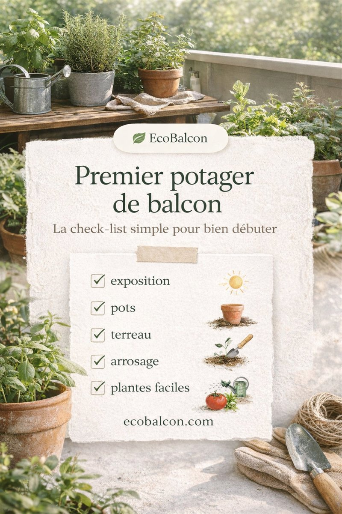

Jardiner sur un balcon ne consiste pas à reproduire un grand potager dans un petit format. C’est plutôt l’art de composer avec la lumière, le vent, le poids, le volume des pots et le temps que l’on peut réellement consacrer aux plantes. Quand on l’accepte, le jardinage urbain devient beaucoup plus simple à mettre en place, et surtout plus agréable à suivre.
Le bon point de départ, c’est donc de lire ton espace avant de choisir tes cultures. Cette étape fait gagner plus de temps que n’importe quel accessoire ou achat impulsif. Si le vent est justement ce qui te complique la vie, notre guide sur le balcon venteux t’aidera à adapter les plantes, les contenants et les protections sans te suréquiper.
Check-list rapide pour commencer

Tu hésites encore sur les plantes à choisir ? Utilise aussi notre simulateur de plantes pour balcon pour trouver des idées adaptées au soleil, à l’ombre, au vent et à la place disponible.
1. Observer l’exposition avant toute plantation
Un balcon plein soleil n’offre pas les mêmes possibilités qu’un balcon orienté est ou qu’un espace à l’ombre. Les tomates, poivrons et aromatiques méditerranéennes réclament beaucoup de lumière. À l’inverse, les laitues, radis, épinards ou certaines herbes se plaisent dans une lumière plus douce.
Si tu hésites, observe simplement pendant deux ou trois jours à quels moments le soleil touche les pots, quelles zones restent plus fraîches et où le vent s’engouffre. Et si la lumière directe manque vraiment, notre guide sur le balcon à l’ombre t’aidera à choisir plus juste.
2. Commencer petit, mais bien
L’erreur classique consiste à multiplier les contenants trop vite. Trois ou quatre pots bien pensés valent souvent mieux qu’un balcon saturé qui devient compliqué à arroser et à entretenir. Un grand contenant garde mieux l’humidité, laisse plus de marge aux racines et limite les échecs liés au stress hydrique.
Le kit de départ minimum
Pour débuter un potager de balcon, pas besoin d’un grand équipement. Un petit ensemble cohérent suffit largement :
- trois ou quatre contenants bien percés : une jardinière pour les feuilles, un grand pot pour une culture d’été, un ou deux pots moyens pour aromatiques ou fraisiers ;
- un terreau de bonne qualité, pensé pour la culture en pot ;
- un arrosoir simple, facile à manier au quotidien ;
- quelques cultures faciles, plutôt qu’un assortiment trop ambitieux.
Si tu veux préparer cette base proprement, notre article sur le matériel essentiel pour commencer peut t’éviter des achats inutiles. Quand ton balcon est déjà bien lancé, tu peux aussi essayer une culture d’été plus généreuse comme le concombre en pot sur balcon.
3. Choisir des cultures qui donnent confiance
Le balcon fonctionne mieux quand on démarre avec des plantes indulgentes. Elles donnent vite des repères, pardonnent davantage les petits oublis et montrent rapidement si l’exposition choisie est la bonne.
Les plantes les plus simples pour débuter
- les laitues, faciles à récolter et intéressantes même avec une lumière douce ;
- les radis, rapides et motivants quand on veut voir un résultat sans attendre trop longtemps ;
- les aromatiques de balcon, comme le basilic, la ciboulette, le persil ou la menthe selon l’exposition ;
- les fraises, très gratifiantes et faciles à intégrer dans un petit espace ;
- les épinards, utiles pour apprendre à gérer une culture plus fraîche.
Si tu veux élargir un peu sans te compliquer, notre sélection de légumes faciles à cultiver en pot peut t’aider à choisir selon la place et la lumière disponibles.
Si tu commences justement au printemps, notre sélection sur ce que planter en avril sur un balcon peut t’aider à transformer ces grandes idées en premières cultures concrètes, sans surcharger l’espace.
Si ton balcon est très ensoleillé, tu peux ajouter plus tard une culture phare comme la tomate cerise ou les poivrons. L’important est de garder un équilibre entre plaisir et charge d’entretien.
4. Organiser l’espace pour qu’il reste agréable
Un balcon productif n’est pas forcément un balcon rempli. Il doit rester facile à traverser, à arroser et à regarder. Regroupe les plantes par besoins proches : celles qui aiment le soleil ensemble, celles qui préfèrent la fraîcheur ailleurs. Tu éviteras ainsi de multiplier les gestes contradictoires.
Pense aussi à exploiter les hauteurs : étagères stables, suspensions raisonnables, tuteurs, treillis ou plantes grimpantes. Place les pots les plus lourds au fond ou contre un mur, et garde à portée de main ce que tu récoltes ou arroses souvent. L’idée n’est pas d’empiler, mais d’utiliser l’espace sans le bloquer.
5. Gérer l’eau sans s’épuiser
Sur balcon, l’arrosage est souvent la vraie ligne de partage entre un jardin agréable et un jardin stressant. Les pots sèchent vite, mais ils n’ont pas tous besoin de la même chose. Les grands contenants, le paillage, une routine matinale et quelques repères simples transforment déjà beaucoup le quotidien.
- Arrose tôt, avant les fortes chaleurs.
- Touche le terreau en profondeur, pas seulement la surface.
- Paille les pots les plus exposés.
- Adapte la fréquence à chaque culture plutôt que d’arroser tout pareil.
Pour aller plus loin, tu peux aussi lire notre dossier sur la réduction de la consommation d’eau sur balcon.
6. Suivre les saisons plutôt que forcer le rythme
Le balcon change beaucoup au fil de l’année. Le printemps sert à lancer, l’été à maintenir, l’automne à relancer des cultures plus douces, et l’hiver à préparer. On jardine mieux quand on accepte ces variations au lieu de vouloir tout produire tout le temps.
Notre calendrier du jardin de balcon peut t’aider à garder ce rythme sans t’éparpiller, surtout si tu veux faire tourner plusieurs bacs sur une année complète.
7. Les erreurs les plus fréquentes
La plupart des échecs viennent de quelques schémas classiques : choisir des plantes inadaptées à l’exposition, multiplier les petits pots, oublier le poids et la prise au vent, ou vouloir trop de cultures gourmandes en même temps.
Si tu veux te faire gagner quelques détours, garde aussi sous la main notre article sur les erreurs à éviter quand on jardine sur un balcon.
FAQ
Faut-il un balcon en plein soleil pour commencer ?
Non. Un balcon peu ensoleillé permet déjà de cultiver des laitues, radis, épinards, menthe, persil ou certaines fleurs. Le plus important est d’adapter les plantes à la lumière réelle.
Combien de pots faut-il pour débuter un potager de balcon ?
Trois ou quatre contenants bien choisis suffisent largement. Tu apprends plus vite, tu arroses mieux et tu évites de transformer le balcon en chantier permanent.
Quel matériel faut-il au minimum ?
Quelques pots bien percés, un terreau pour culture en pot, un arrosoir simple et quelques plantes faciles suffisent au début. Le reste peut venir ensuite, quand tu connais mieux ton balcon.
Quelles plantes sont les plus simples quand on débute ?
Les laitues, radis, aromatiques, fraises et souvent les épinards sont parmi les cultures les plus indulgentes. Elles aident à prendre confiance avant de passer à des plantes plus gourmandes.
Comment éviter de se faire déborder par l’arrosage ?
Commence avec peu de pots, préfère des contenants assez grands, arrose tôt et paille les surfaces exposées. Un balcon simple à arroser reste presque toujours plus durable qu’un balcon trop ambitieux.
En résumé
Jardiner sur un balcon, ce n’est pas réussir à tout faire rentrer. C’est réussir à faire tenir un petit système simple : une exposition bien lue, quelques plantes faciles, des pots assez grands et une routine d’arrosage réaliste.
Si tu commences avec trois ou quatre contenants bien choisis, tu auras déjà de quoi récolter, observer et ajuster. C’est souvent comme ça qu’un potager de balcon devient, saison après saison, un vrai coin de jardin en ville.